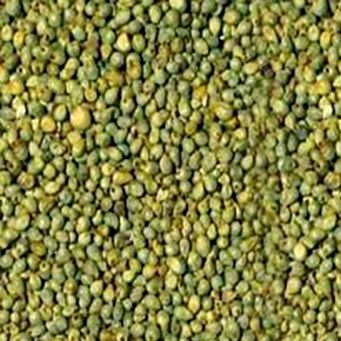
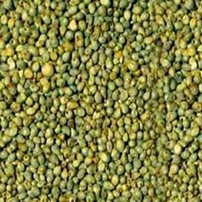

Our Aim
Government of India had proposed to United Nations for declaring 2023 as International Year of Millets (IYOM). The proposal of India was supported by 72 countries and United Nation's General Assembly (UNGA) declared 2023 as International Year of Millets. Millets are a good source of protein, fiber, key vitamins, and minerals. Millet is one of the oldest cultivated grains in the world and has been grown throughout Africa and Southeast Asia for thousands of years. Millet can be used to make bread, beer, cereal, and other dishes. Millet supply chain suffers from inconsistent supply and demand that prevents its commercial viability. The lack of public awareness about nutritional benefits of millets has led to limited adoption of millets as a ready to cook cereal. Millets are extremely nutritious and are proven to have health benefits. In its pursuit to create an innovation driven India and celebrate the International Year of Millets, Atal Innovation Mission, NITI Aayog has launched 4 challenges of national importance and societal relevance. The solutions to these challenges will help bridge the gaps in the millet supply chain - promoting sustainable production, enhanced nutrition, wider acceptance, and increased consumption. Millet is a good source of protein, fiber, key vitamins, and minerals. The potential health benefits of millet include protecting cardiovascular health, preventing the onset of diabetes, helping people achieve and maintain a healthy weight, and managing inflammation in the gut. Millet is also an adaptable grain. Our aim is to spread the awareness of millets and their benefits so that its use among the people may grow and and that people can adapt to using millets as a staple food. Millet is very healthy grain, and its proper usage may be the solutions to many diseases and decficiencies. There are innumerable recipes which use millets and they are delicious and healthy! We strive to promote millets - knowing the great inportance it possesses.
 
